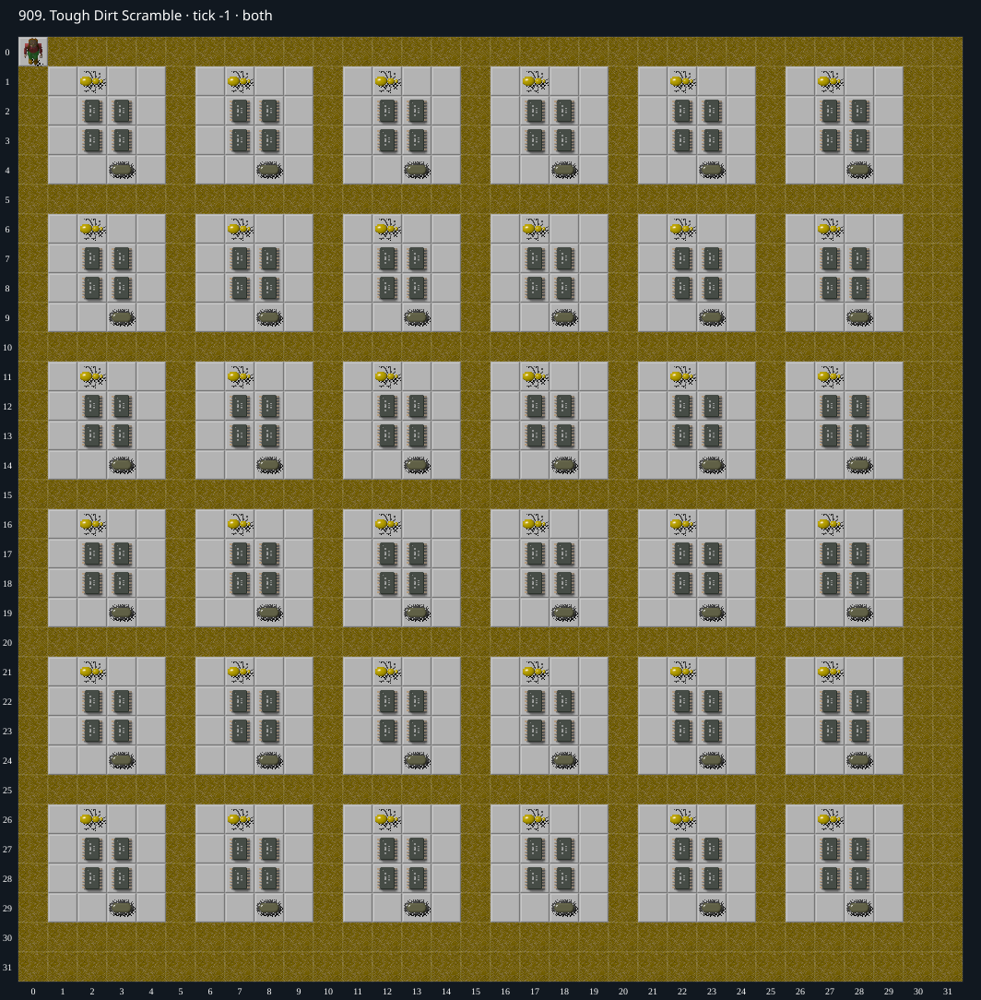

Jacques · Original Tile World MS
909. Tough Dirt Scramble
Impossibility argumentNeither map layer contains an Exit tile.
267 chips required · 530 second time limit
Why completion is impossible
- An exhaustive inventory of all 1,024 cells in both layers finds zero actual Exit tiles. Decorative Chip images are different tile types and cannot finish the level.
- The native MS completion condition requires Chip to arrive on an actual Exit. No available movement, button, clone, or terrain transformation creates an Exit tile.
- Therefore no legal input sequence can complete this unmodified level. This does not depend on random seed or timing.
Inspect both layers
The main map shows the initial runtime state. Switch to the buried layer to inspect hidden terrain and items. Hover coordinates are also available in the downloadable SVG.

